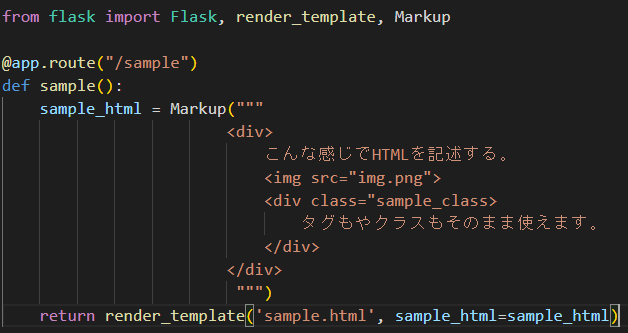

今回はflaskでHTMLを埋め込んでみたのでそのやり方を紹介します。
やり方としてはとてもシンプルで、埋め込みたいHTMLをそのままstr型で保存して、returnで渡すというものです。
下記のコードのように記述します。

Markup()の中に書くことによってdivなどのタグをエスケープされないようにしています。
今回はHTMLの埋め込み方法のひとつを紹介しました。
詳しく知りたい方はこちら
こちら
の記事が参考になると思います。